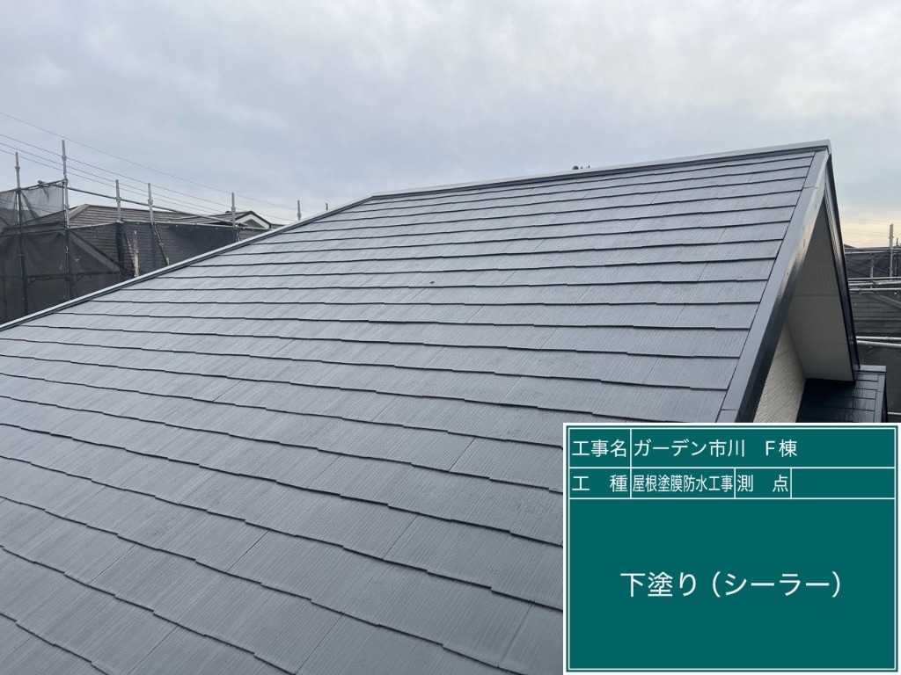
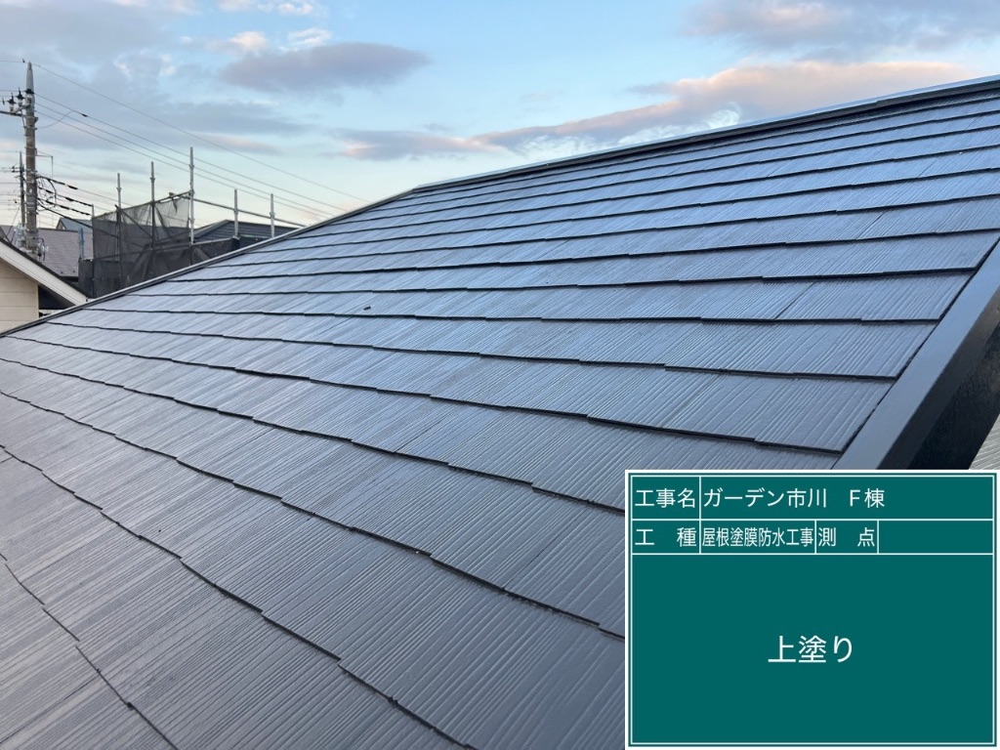
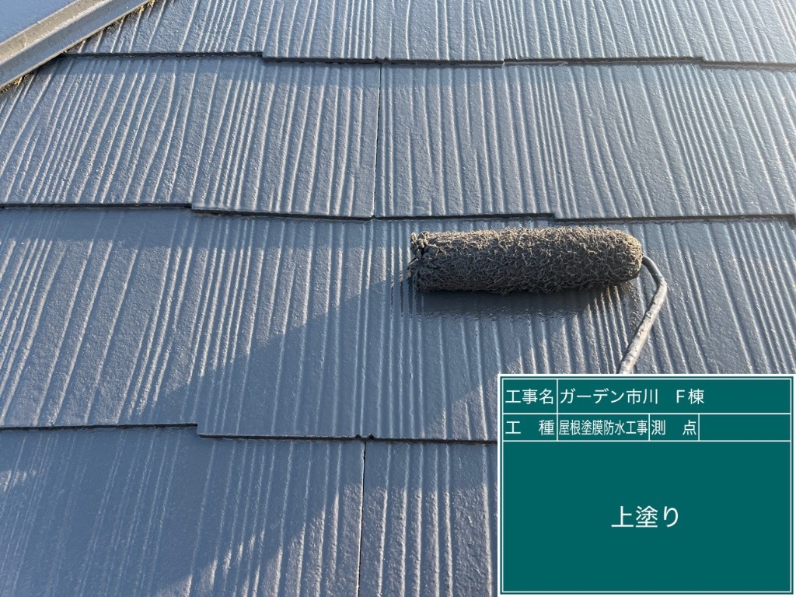
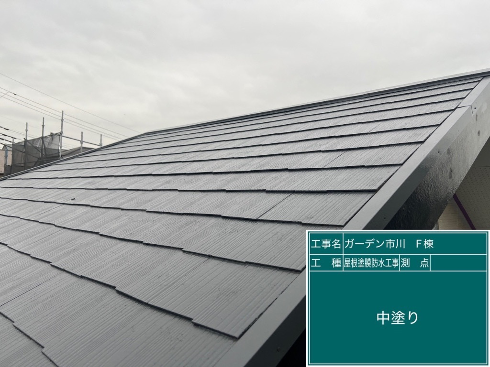

Before

After




📍 町田市 F様




以前に別の工事をさせて頂いたお客様からのご紹介で、町田市のF様のご自宅へお伺いしました。
築16年が経過し、屋根の色褪せが目立つようになってきたとのこと。特に日当たりの良い南側の屋根は、塗膜の劣化が進行しており、このまま放置すると防水機能が低下し、雨漏りのリスクが高まる状態でした。
また、屋根表面にコケや藻も発生し始めており、美観も損なわれていました。
経年劣化による塗膜の劣化が主な原因でした。
築16年という年数で、紫外線や雨風にさらされ続けたことで、屋根の塗膜が徐々に劣化。防水機能が低下し、屋根材自体も傷み始めていました。
定期的なメンテナンスを行うことで、屋根の寿命を延ばすことができます。
💰 費用（税込）
60万円
※ 足場費用含む
📅 工期
5日間
足場設置から完了まで
【1. ご紹介のお客様】
以前に別の工事をさせて頂いたお客様からのご紹介でした。信頼関係を大切に、丁寧な施工を心がけました。
【2. 遮熱塗料を使用】
今回は遮熱効果のある高性能塗料を使用。夏の暑さ対策にも効果的で、室内の温度上昇を抑えることができます。
【3. 3回塗りで耐久性アップ】
下塗り（シーラー）→中塗り→上塗りの3回塗りで、長期的な耐久性を確保しました。
【4. 高圧洗浄で下地処理】
塗装前に高圧洗浄でコケや藻、古い塗膜をしっかり除去。塗料の密着性を高めました。
工期5日間で、お客様の生活への影響を最小限に抑えながら、丁寧な施工を行いました。
「知人からの紹介で、こちらにお願いしました。知人も『丁寧で安心できる会社だよ』と言っていたので、安心してお任せできました。
屋根の色褪せが気になっていたのですが、塗装後は見違えるようにキレイになりました！遮熱塗料を使ってくださったので、夏の暑さも和らぐことを期待しています。
職人さんたちも礼儀正しく、作業も丁寧でした。毎日、作業の進捗を報告してくださったので、安心して任せることができました。
工事後も、女性の社長さんが訪問してくださり、『何かあればすぐに連絡してください』と声をかけてくださいました。アフターフォローもしっかりしていて、本当に信頼できる会社だと思います。知人に紹介してもらって良かったです！」
- 町田市 F様・60代男性